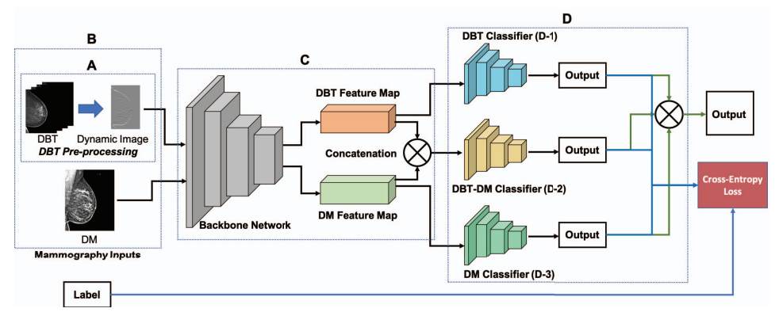
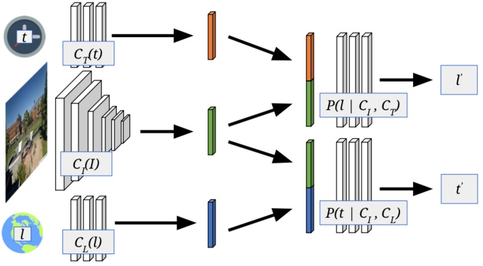
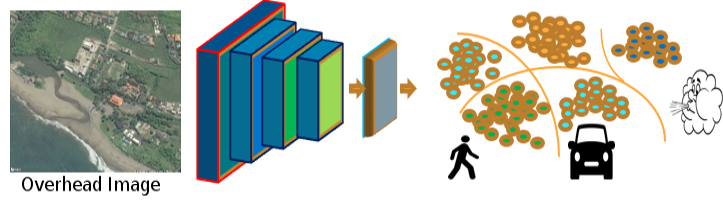
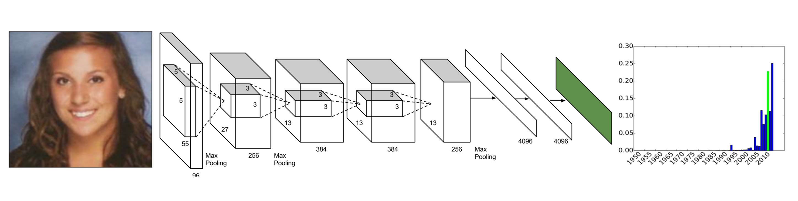

Research Projects
My research spans computer vision, machine learning and artificial intelligence, multimodal AI, and computing education. I am particularly interested in methods that connect visual information with temporal, geographic, acoustic, textual, and educational data, as well as AI systems that support learning and real-world applications.
Computer Vision & Multimodal AI
Food Computing & Vision-Language Models
This research explores visual and multimodal AI for food understanding, including food recognition, segmentation, food-state recognition, and zero-shot recognition using vision-language models.
Content-Aware Detection of Temporal Metadata Manipulation
We developed content-aware methods for detecting whether image timestamps have been manipulated by comparing temporal metadata with visual evidence contained in the image.

Medical Image Analysis
My medical imaging work applies deep learning to classification and segmentation problems, including breast cancer classification and chest X-ray analysis.

Geospatial, Temporal & Remote Sensing AI
Learning a Dynamic Map of Visual Appearance
This work models how the visual appearance of locations changes over time, learning dynamic representations from large collections of geotagged imagery.

Learning Geo-Temporal Image Features
This project investigates representations that capture where and when an image was taken, connecting visual appearance with geographic and temporal context.

A Multimodal Approach to Mapping Soundscapes
This work combines visual, geographic, and acoustic information to estimate and map environmental sound characteristics at geographic scale.

Visual Time Estimation
Analyzing Human Appearance as a Cue for Dating Images
This project studies how changes in human appearance provide visual evidence for estimating when photographs were captured.

Computing Education & AI for Learning
Interactive Flowchart-to-Code Learning Environments
My current work investigates how interactive visual programming environments can strengthen conceptual understanding in introductory programming. This research includes ChartCode, a flowchart-centric environment that connects program logic, visualization, and source code.
NSF IUSE, 2026–2029: Improving Conceptual Understanding in Introductory Programming through an Interactive Flowchart-to-Code Environment. This collaborative project brings together researchers at Purdue University, Western Kentucky University, and Texas A&M University–San Antonio.
For additional work, see my Publications page or Google Scholar profile.